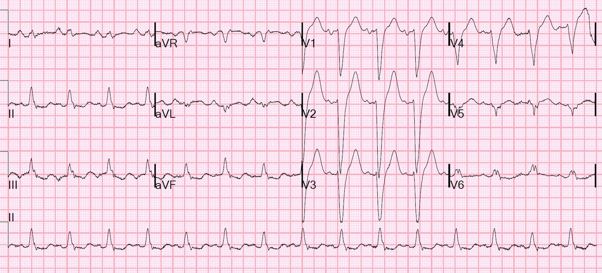
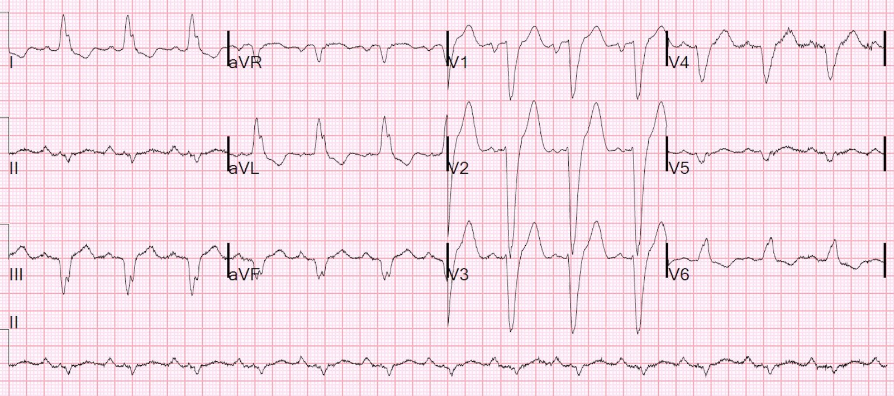
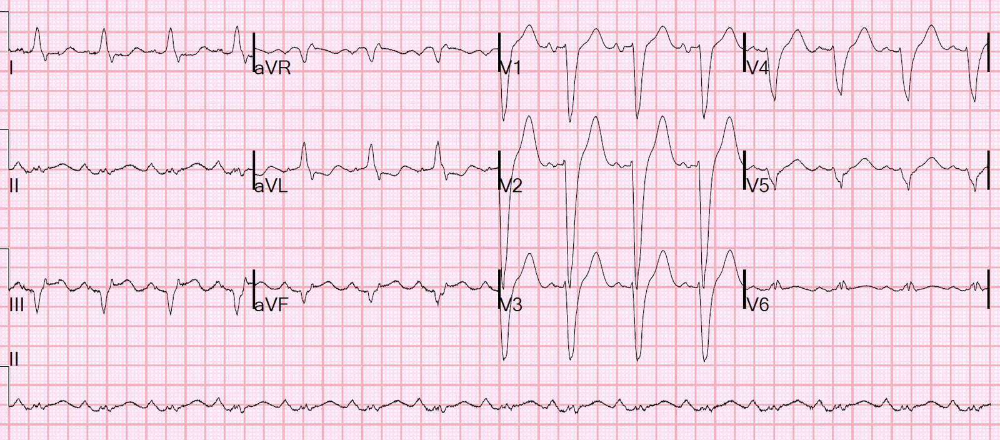
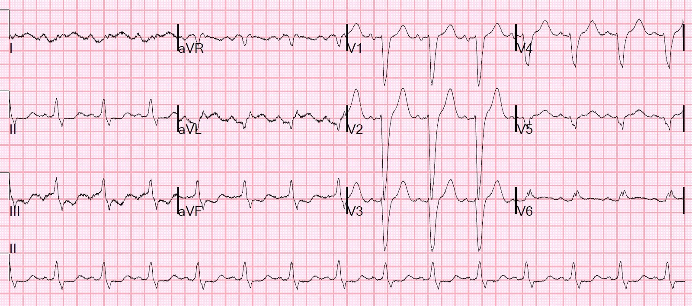
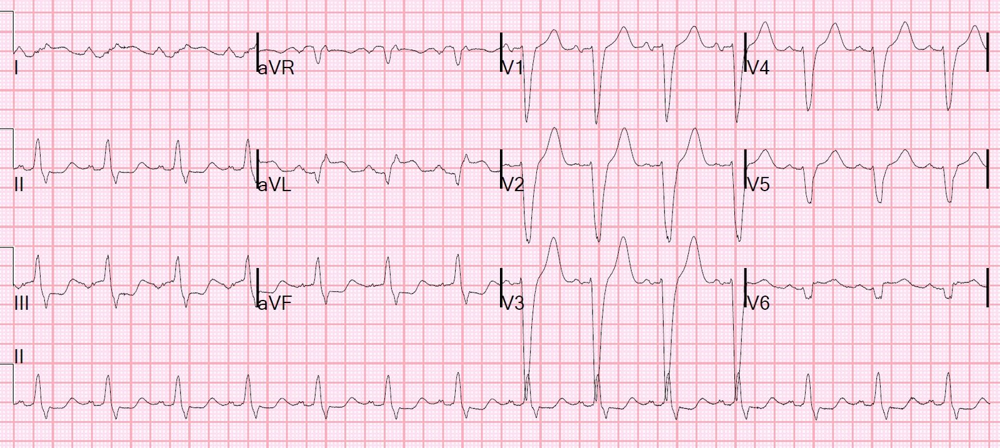
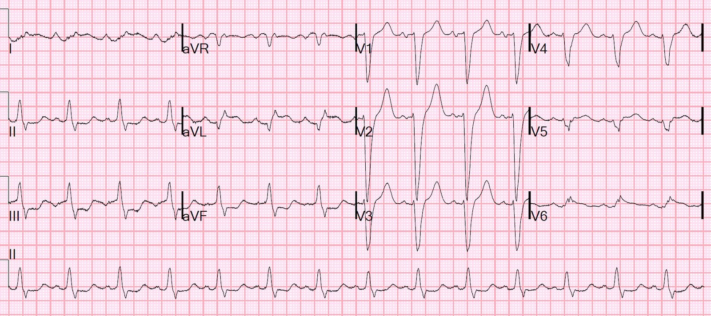
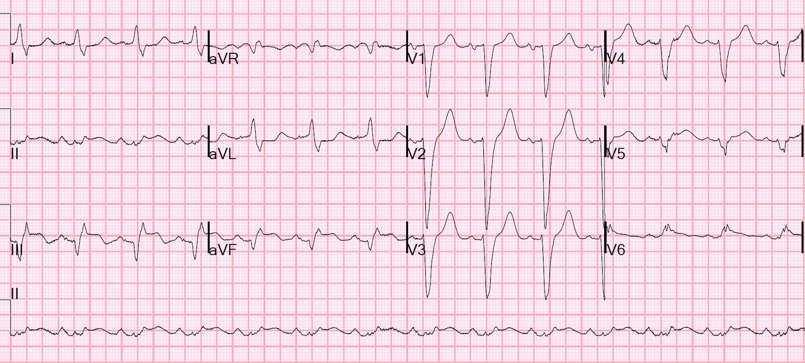
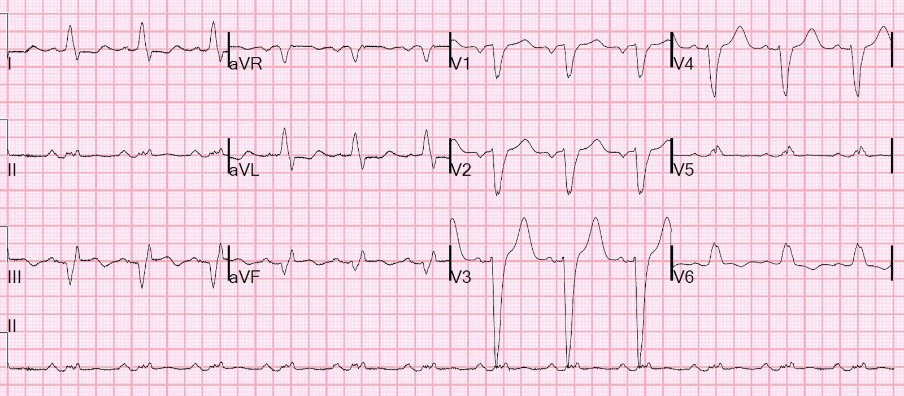
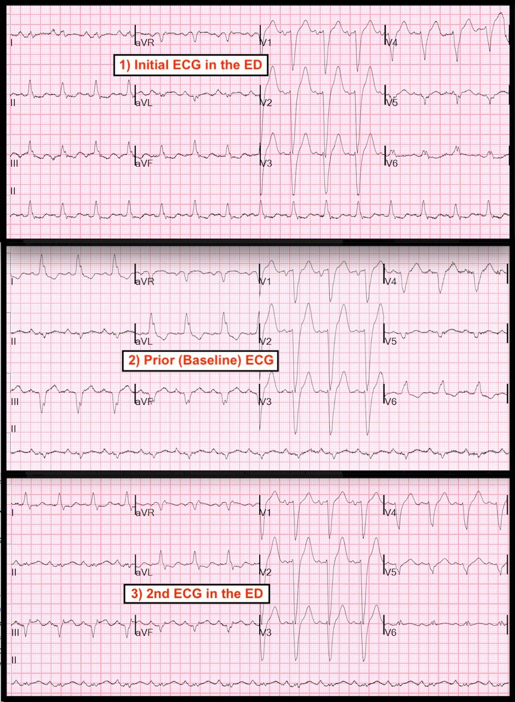

04/06/2018 — Blốc nhánh trái, đau ngực dữ dội, chụp mạch vành trước đây bình thường. Chuyện gì đang xảy ra?
Bản dịch tiếng Việt của bài "Left Bundle Branch Block, Severe Chest pain, Previous Normal Angio. What is going on?" – Dr. Smith’s ECG Blog. Giữ nguyên toàn bộ 10 hình ảnh của bản gốc.
Một phụ nữ trung niên bị bệnh cơ tim vô căn và suy tim hai thất, với EF trước đây là 15%, đến viện vì đau ngực sau xương ức dữ dội khởi phát đột ngột.
Bà có LBBB với QRS rộng, do đó là ứng viên đặt máy tạo nhịp hai thất để điều trị tái đồng bộ tim, nhưng khi cấy máy tạo nhịp, người ta không thể đưa được dây điện cực thất trái vào đúng vị trí (khó khăn kỹ thuật). Vì vậy, bà chỉ được đặt một máy tạo nhịp thất phải thông thường.
Bà mới được chụp mạch vành gần như hoàn toàn bình thường, được mô tả bên dưới.
Đây là điện tâm đồ ban đầu của bà tại khoa cấp cứu (ED):


3. Có bằng chứng nào của thiếu máu cục bộ ở đây không?
Điện tâm đồ trước đây:


Trục lệch trái, điều thường gặp trong LBBB
1. Đây không phải nhịp tạo nhịp. Đơn giản chỉ là blốc nhánh trái (LBBB)
2. Điện tâm đồ ban đầu có trục hướng xuống dưới. Điều này gợi ý các điện cực chi bị đảo, vì trong khi điện tâm đồ trước đây có sóng R đơn pha lớn ở aVL, với QRS âm ở III, thì điện tâm đồ ban đầu lại có hình ảnh ngược lại.
3. Điện tâm đồ ban đầu này không có bằng chứng thiếu máu cục bộ.
Kết quả chụp mạch vành bình thường trước đây, được thực hiện để đánh giá nguyên nhân bệnh cơ tim:
Bệnh động mạch vành tối thiểu
Nhận định và khuyến nghị:
Không ghi nhận bệnh động mạch vành thượng tâm mạc để giải thích tình trạng suy tim tâm thu tiến triển
hoặc bất thường trên siêu âm tim qua thành ngực (TTE)
Nghi ngờ nguyên nhân không do thiếu máu cục bộ của bệnh cơ tim
LMCA (thân chung động mạch vành trái):
LMCA là mạch có khẩu kính tương đối nhỏ.
Không ghi nhận bệnh động mạch vành đáng kể.
LAD:
LAD chạy tới mỏm tim.
LAD là mạch có khẩu kính trung bình.
Có một nhánh chéo thứ nhất khẩu kính trung bình, phân nhánh, với hẹp 20% dạng ống
hẹp ở đoạn lỗ xuất phát-đoạn gần của mạch.
Có mảng xơ vữa nhẹ ở LAD đoạn giữa, sau D1.
Không có D2.
D3 là mạch có khẩu kính nhỏ.
LCx:
Mạch có khẩu kính lớn.
Không có OM1 (do có nhánh trung gian [Ramus])
OM2 là mạch phân nhánh khẩu kính lớn, cấp máu cho phần lớn
thành dưới và thành dưới-bên đến tận mỏm.
Có một OM3 khẩu kính nhỏ.
Không ghi nhận bệnh động mạch vành đáng kể.
RCA:
Mạch có khẩu kính lớn.
RCA có lỗ xuất phát bình thường.
rPDA (động mạch liên thất sau phải) là mạch có khẩu kính trung bình (xuất phát hơi sớm),
chạy tới mỏm tim.
RPAV (nhánh nhĩ thất sau phải) là mạch có khẩu kính trung bình, cho ra hai nhánh rPLA (nhánh sau bên phải) nhỏ.
Không ghi nhận bệnh động mạch vành đáng kể.
Nhánh trung gian (Ramus):
Có một nhánh trung gian (Ramus intermedius) khẩu kính trung bình với mảng xơ vữa nhẹ ở lỗ xuất phát.
Với một kết quả chụp mạch vành trước đó gần như bình thường đến vậy, hội chứng vành cấp (ACS) mới là rất khó xảy ra. Xem bài này từ tuần trước về các ca chụp mạch vành hoàn toàn bình thường:
Chest pain, Ventricular Paced Rhythm, and a Completely Normal Angiogram 3 Months Prior. (Đau ngực, nhịp tạo nhịp thất và kết quả chụp mạch vành hoàn toàn bình thường ba tháng trước đó.)
Ca bệnh tiếp diễn:
Cơn đau vẫn tiếp tục, dữ dội, và điện tâm đồ thứ 2 được ghi lúc 24 phút:


Sóng R dương ở aVL đã trở lại. Các điện cực đã được đặt lại.
Giờ đây có thay đổi ST đáng kể ở III và aVL, với ST chênh lên mới ở III đạt tiêu chuẩn Sgarbossa cải biên: có 2 mm ST chênh lên ngược hướng ở chuyển đạo III, bằng 33% sóng S đi trước, đo được 6 mm. Mức này vượt ngưỡng 20-25% và, dù chỉ ở một chuyển đạo, cũng đủ để chẩn đoán tắc mạch vành cấp. Điều này càng đúng khi có sự thay đổi (so với trước).
Bình luận: Bệnh nhân đã có suy tim tâm thu nặng từ trước có nguy cơ cực kỳ cao khi bị tắc mạch vành mới. Họ nên được hưởng lợi từ sự nghi ngờ, nếu có bất kỳ nghi ngờ nào, và được đưa vào phòng thông tim (cath lab). Trách nhiệm của người điều trị là phải chứng minh không có tắc mạch vành. Không nên dựa vào một kết quả chụp mạch vành bình thường trước đây.
Tình trạng tắc mạch đã được bác sĩ nội trú chẩn đoán, người này muốn kích hoạt phòng thông tim, nhưng bác sĩ hướng dẫn (faculty) không bị thuyết phục.
Một điện tâm đồ khác được ghi lúc 46 phút:


Và giờ đây có ST chênh lên ngược hướng quá mức ở aVL, kèm ST chênh xuống ngược hướng quá mức ở chuyển đạo III.
Vậy đây là nhồi máu thành dưới? Hay nhồi máu thành bên cao?
Không quan trọng! Hãy kích hoạt phòng thông tim!
Đã hội chẩn tim mạch nhưng tiếc thay, vì lý do nào đó, phòng thông tim không được kích hoạt (có lẽ vì kết quả chụp mạch vành gần như bình thường trước đó), và một điện tâm đồ khác được ghi lúc 92 phút:


105 phút


122 phút


Thiếu máu cục bộ không thay đổi
Cuối cùng phòng thông tim cũng được kích hoạt.
Chụp mạch vành
Nhồi máu cơ tim ST chênh lên cấp thành bên kèm LBBB.
Thủ phạm là tắc 100% nhánh OM2 của LCX
Tổn thương giảm còn 0%
Rất nghi ngờ nguồn huyết khối ngoài mạch vành ở OM2: rung nhĩ kịch phát hoặc huyết khối
thất trái. Kiểm tra máy AICD sẽ hữu ích trong trường hợp có rung nhĩ kịch phát (P Afib)!
Không có bệnh động mạch vành (CAD) đáng kể ở LAD hoặc RCA.
Chụp mạch vành với tắc OM2 được điều trị bằng nong bóng (PTCA) – cục huyết khối bị đẩy xuống mạch phía xa. Hình ảnh gợi ý có thể có căn nguyên thuyên tắc hơn là nứt vỡ mảng xơ vữa.
Sau thông tim:


Troponin I đạt đỉnh 88 ng/mL
Siêu âm tim cho thấy EF hiện dưới 10%
Có thể có rối loạn vận động thành khu trú mới ở thành dưới-bên.
Bệnh nhân không cải thiện triệu chứng nhiều sau thông tim.
Đánh giá:
Không có xơ vữa động mạch trên phim chụp mạch vành làm dấy lên lo ngại về căn nguyên thuyên tắc, nhưng kiểm tra thiết bị không thấy AF và siêu âm tim qua thành ngực (TTE) không có bằng chứng huyết khối thất trái. Đề nghị làm siêu âm tim qua thực quản (TEE) để đánh giá tốt hơn sự hiện diện của huyết khối.
Siêu âm tim qua thực quản (TEE) đã được thực hiện và phát hiện huyết khối trong tiểu nhĩ trái. Đây rõ ràng là nguồn gây thuyên tắc và tắc mạch!
Những điểm cần học:
1. Tiêu chuẩn Sgarbossa cải biên theo Smith có lẽ có độ nhạy 75-80% (tương tự tiêu chuẩn STEMI khi dẫn truyền bình thường).
2. Tuy nhiên, chúng có độ đặc hiệu 99%.
3. Có những nguyên nhân khác ngoài xơ vữa động mạch gây tắc mạch vành cấp.
4. Vì vậy, đừng để một kết quả chụp mạch vành bình thường trước đây trở thành trở ngại cho việc đọc điện tâm đồ.
5. Vị trí đặt điện cực có thể gây nhầm lẫn về vị trí nhồi máu, nhưng không được ngăn cản bạn đưa ra chẩn đoán và kích hoạt phòng thông tim.

=====================================
Bình luận của KEN GRAUER, MD (4/6/2018):
=====================================
Một bài blog tuyệt vời của Dr. Smith với rất nhiều điểm giảng dạy! Tôi sẽ hướng phần Bình luận của mình vào việc bổ sung cho một số khái niệm then chốt đã được đề cập.
- Một trong những lý do làm chậm trễ việc điều trị tối ưu cho bệnh nhân này là không nhận ra việc đặt sai vị trí điện cực. Đa số bác sĩ lâm sàng có kinh nghiệm đều tự tin nhận ra dạng đặt sai điện cực thường gặp nhất — đó là nhầm lẫn giữa điện cực LA và RA. Sự cố kỹ thuật này thường hiển nhiên do âm toàn bộ (global negativity) của sóng P, QRS và sóng T ở chuyển đạo I (điều lẽ ra không bao giờ xảy ra) — và dương toàn bộ (global positivity) ở chuyển đạo aVR. Các dạng đặt sai điện cực khác có thể kín đáo hơn nhiều. Đó chính là trường hợp ở đây!
- Điện tâm đồ thứ 1 ghi tại khoa cấp cứu biểu hiện Đảo Điện cực LA-LL (LA-LL Lead Reversal). Bản tóm tắt TỐT NHẤT mà tôi từng thấy về cách nhận ra các dạng đảo điện cực khác nhau nằm trên Life-In-The-Fast-Lane. Thật dễ chịu là không cần bảng tra cứu nhanh (crib sheet) nào cho các dấu hiệu chính — vì tất cả những gì bạn cần làm là Google “LITFL Lead Reversal” — và đường link tới bài viết vô giá này sẽ hiện ra ngay!
Theo LITFL — các dấu hiệu của đảo điện cực LA-LL là:
- Chuyển đạo III bị đảo ngược (so với hình dạng trước đó).
- Chuyển đạo I và II đổi chỗ cho nhau.
- Chuyển đạo aVL và aVF đổi chỗ cho nhau.
- Chuyển đạo aVR giữ nguyên không đổi.
- ĐIỂM THEN CHỐT (PEARL): MẤU CHỐT để nhanh chóng nhận ra khả năng đảo điện cực LA-LL — là sóng P ở chuyển đạo I lớn hơn ở chuyển đạo II một cách bất ngờ (trong khi thông thường thì ngược lại).
Cho rõ ràng — tôi đã đặt 3 điện tâm đồ đầu tiên trong bài blog này vào cùng một hình (Hình 1). Nhịp xoang với hình dạng LBBB ở các chuyển đạo trước tim hiện diện trên cả 3 bản ghi. Như Dr. Smith đã nêu — có sự thay đổi rõ rệt của trục QRS ở các chuyển đạo chi giữa điện tâm đồ Ban đầu ghi tại khoa cấp cứu (bản ghi Trên cùng ở Hình 1) — so với điện tâm đồ Trước đây (điện tâm đồ nền) (bản ghi Ở giữa).
- Kích thước tương đối của sóng P ở chuyển đạo I và II trên điện tâm đồ Ban đầu tại khoa cấp cứu có gì bất thường?


TRẢ LỜI: Sóng P ở chuyển đạo I lớn hơn nhiều so với sóng P ở chuyển đạo II trên điện tâm đồ Ban đầu này (bản ghi Trên cùng ở Hình 1). Ngược lại — sóng P ở chuyển đạo II lớn hơn (đúng như lẽ phải vậy) trên điện tâm đồ Trước đây (điện tâm đồ nền). Các dấu hiệu khác phù hợp với đảo điện cực LA-LL được thấy khi so sánh điện tâm đồ Ban đầu tại khoa cấp cứu với điện tâm đồ Nền:
- Hình dạng của chuyển đạo I và II về cơ bản đã đổi chỗ cho nhau.
- Hình dạng của chuyển đạo aVL và aVF về cơ bản đã đổi chỗ cho nhau.
- Cực tính của sóng P, phức bộ QRS và đoạn ST ở chuyển đạo III bị đảo ngược.
- Chuyển đạo aVR không thay đổi.
Bản ghi thứ 3 (Dưới cùng) trong Hình 1 là điện tâm đồ thứ 2 ghi tại khoa cấp cứu, 24 phút sau điện tâm đồ Ban đầu.
- So sánh điện tâm đồ thứ 2 tại khoa cấp cứu này với điện tâm đồ Nền — gợi ý có thay đổi định tính tinh tế nhưng có thật ở sóng ST-T của từng chuyển đạo thành dưới. Các sóng ST-T này giờ trông tối cấp. Hình ảnh đối nghịch “soi gương” kỳ diệu được thấy ở sóng ST-T của chuyển đạo III và aVL. Ở một bệnh nhân có đau ngực mới — những thay đổi này rất gợi ý tắc mạch vành cấp.
Quay lại điện tâm đồ Ban đầu (bản ghi Trên cùng ở Hình 1). Xét rằng giờ chúng ta đã biết có đảo điện cực LA-LL trên điện tâm đồ Ban đầu này — tôi nghĩ những thay đổi tối cấp mà chúng ta ghi nhận ở điện tâm đồ thứ 2 tại khoa cấp cứu có lẽ đã có sẵn trên điện tâm đồ Ban đầu này.
- Nếu bạn “đảo ngược” sóng P, phức bộ QRS và sóng ST-T ở chuyển đạo III của điện tâm đồ Ban đầu … — Chẳng phải hình ảnh thu được rất giống với những gì ta thấy ở chuyển đạo III trên điện tâm đồ thứ 2 tại khoa cấp cứu sao?
- Nếu ta xem aVL trên điện tâm đồ Ban đầu thực ra là chuyển đạo aVF — Chẳng phải ta thấy một phần ST chênh lên tinh tế mà giờ ta thấy ở aVF của điện tâm đồ thứ 2 sao?
- Và, nếu ta xem aVF trên điện tâm đồ Ban đầu thực ra là chuyển đạo aVL — Chẳng phải ta sẽ có hình ảnh đối nghịch “soi gương” kỳ diệu giữa chuyển đạo III đã đảo ngược và chuyển đạo aVL sao?
ĐIỀU CỐT LÕI: Một ca tuyệt vời của Dr. Smith, với rất nhiều điểm giảng dạy quan trọng về mọi khía cạnh của ca bệnh này. Hãy thêm vào đó ĐIỂM THEN CHỐT (PEARL) cần nhớ: sự thay đổi trục rõ rệt kèm sóng P ở chuyển đạo I lớn một cách bất ngờ (so với chuyển đạo II) có thể là một “dấu hiệu mách nước” (tip-off) của đảo điện cực LA-LL.